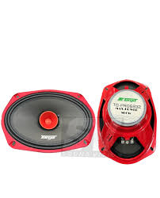
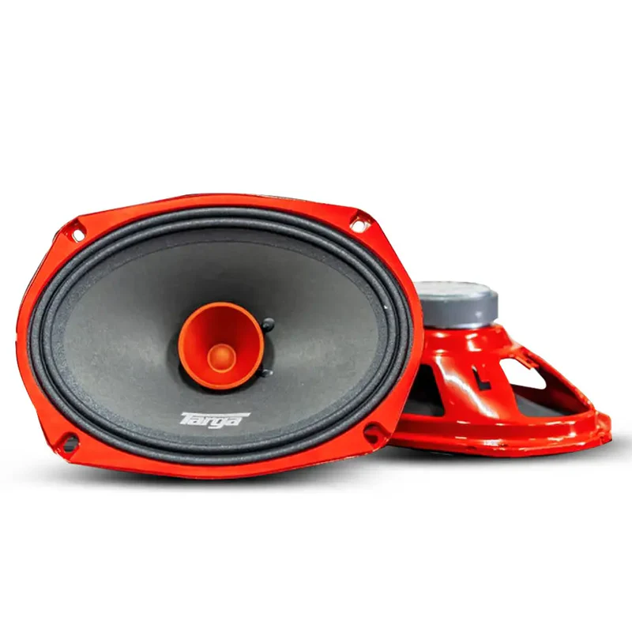
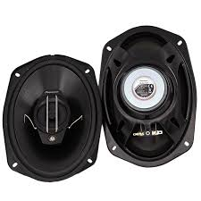
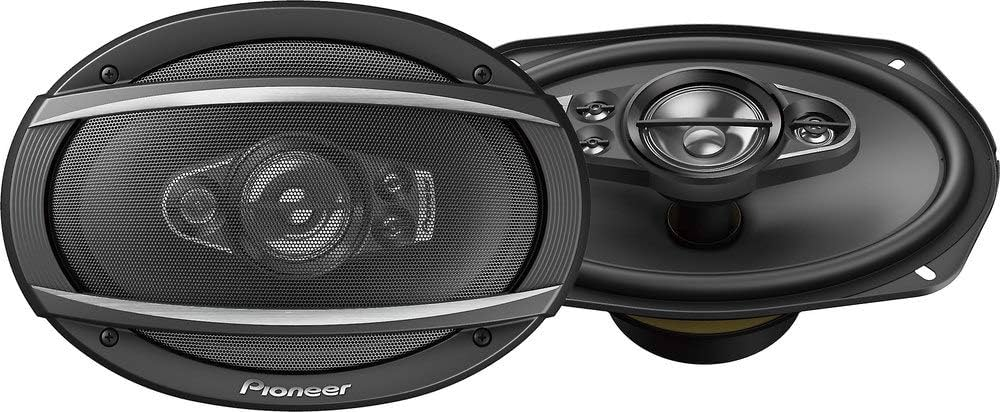

Targa 6X9 Pro Mid 800W Speaker [TG-PRO6932]
Description
Targa 6X9 Pro Mid 800W Speaker: Powerful mid-range sound with 800W power, perfect for professional audio setups.
The Targa 6X9 Pro Mid 800W Speaker delivers powerful mid-range sound with its 6.9" design, red steel basket, and high-temp voice coil. Built for professional-grade performance, it ensures clear, dynamic audio with a frequency response from 110Hz to 20kHz.
available in stock: 4 pairs left
Features:
6.9” mid-range speaker
High-temp voice coil
Durable red steel basket
Specifications:
Max Power: 800W
Frequency Response: 110Hz - 20kHz
Impedance: 4Ω
Benefits:
Excellent sound clarity
Built for durability and performance
price:R400




home | buy now
| weight |
dimensions |
barcodes |
Configuration |
Size |
Product Type |
| 2 kg |
42 × 28 × 10 cm |
[TG-PRO6932] |
4 Ohm |
6 Inch x 9 Inch |
Midbass/Midrange |